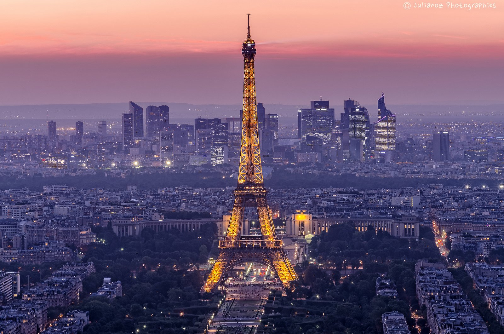

The magnetic City of Light draws visitors from around the globe who come to see iconic attractions like the Eiffel Tower, the Louvre and the Arc de Triomphe. But what travelers really fall in love with are the city's quaint cafes, vibrant markets, trendy shopping districts and unmistakable je ne sais quoi charm. Get lost wandering along Paris' cobblestone streets, or grab a croissant and relax on the banks of the Seine for hours. If you're up for a quick daytrip, head about 15 miles southwest of the city center to another must-see attraction: the Palace of Versailles.
